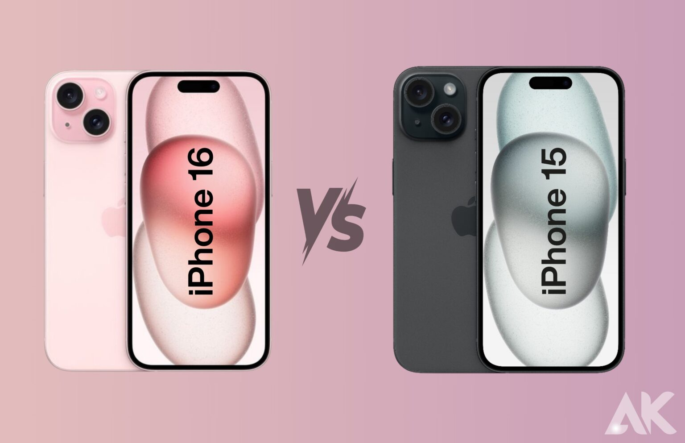

Performance de l’iPhone 16 :
Grâce à la puce A18 de 3 nm, l’iPhone 16 offre des performances exceptionnelles en termes de vitesse et de fluidité. Que ce soit pour les jeux, le multitâche ou les applications gourmandes en ressources, l’iPhone 16 surpasse de loin son prédécesseur, l’iPhone 15. Les tests montrent une amélioration de 30 % des performances générales grâce à ce nouveau processeur.
Tests de performance et de l'autonomie de la batterie:
| Test | iPhone 16 | iPhone 15 |
|---|---|---|
| Temps de lancement d’une application | 1,5 secondes | 2,1 secondes |
| Autonomie en lecture vidéo | 22 heures | 20 heures |
| Temps de jeu continu | 15 heures | 13 heures |